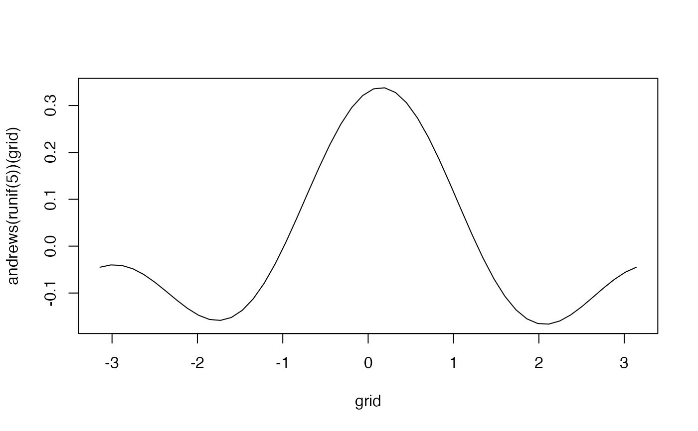

This function takes a numeric vector of input, and returns a function which allows you to compute the value of the Andrew's curve at every point along its path from -pi to pi.
Examples
a <- andrews(1:2)
a(0)
#> [1] 0.3535534
a(-pi)
#> [1] 0.3535534
grid <- seq(-pi, pi, length = 50)
a(grid)
#> [1] 0.35355339 0.22567623 0.09989881 -0.02171361 -0.13716416 -0.24455714
#> [7] -0.34212916 -0.42827809 -0.50158937 -0.56085923 -0.60511446 -0.63362839
#> [13] -0.64593283 -0.64182572 -0.62137452 -0.58491503 -0.53304592 -0.46661886
#> [19] -0.38672461 -0.29467500 -0.19198151 -0.08033035 0.03844517 0.16239476
#> [25] 0.28948317 0.41762361 0.54471202 0.66866161 0.78743713 0.89908829
#> [31] 1.00178179 1.09383139 1.17372565 1.24015270 1.29202181 1.32848130
#> [37] 1.34893250 1.35303961 1.34073517 1.31222124 1.26796601 1.20869615
#> [43] 1.13538487 1.04923594 0.95166392 0.84427094 0.72882040 0.60720797
#> [49] 0.48143055 0.35355339
plot(grid, andrews(1:2)(grid), type = "l")
plot(grid, andrews(runif(5))(grid), type = "l")
